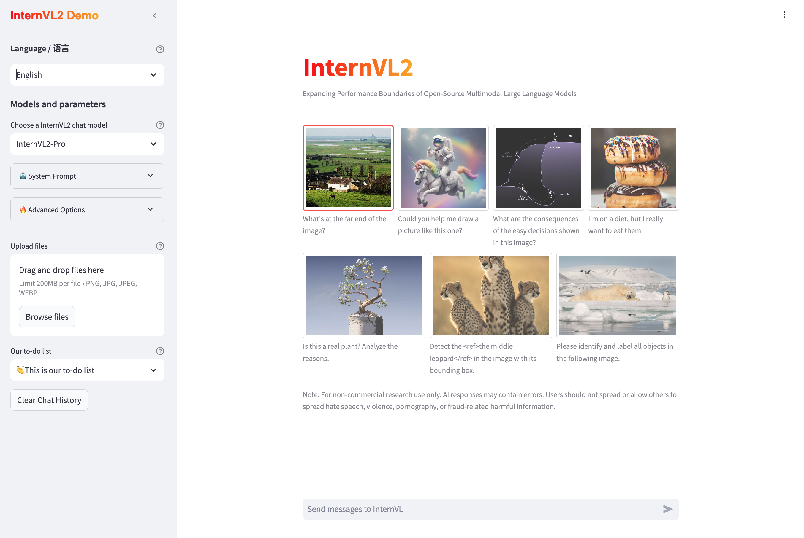

Local Chat Demo#
This document provides instructions for setting up the InternVL online demo. The system architecture includes a web server, a controller, and multiple model workers.
Streamlit Demo#
We have built a new online demo using Streamlit. It looks like as shown in the figure below.

You can run it using the commands below. If you encounter any environment issues, please install the required dependencies:
pip install -r requirements/streamlit_demo.txt
Step 1: Set Variables#
In your terminal, set the following variables:
export SD_SERVER_PORT=39999
export WEB_SERVER_PORT=10003
export CONTROLLER_PORT=40000
export CONTROLLER_URL=http://0.0.0.0:$CONTROLLER_PORT
export SD_WORKER_URL=http://0.0.0.0:$SD_SERVER_PORT
Step 2: Start the Streamlit Web Server#
Run the following command to start the Streamlit web server on port $WEB_SERVER_PORT:
streamlit run app.py --server.port $WEB_SERVER_PORT -- --controller_url $CONTROLLER_URL --sd_worker_url $SD_WORKER_URL
Note: The -- -- is required and not a typo.
Step 3: Start the Controller#
Run the following command to start the controller on port $CONTROLLER_PORT:
python controller.py --host 0.0.0.0 --port $CONTROLLER_PORT
Step 4: Start the Model Workers#
(Optional) Stable Diffusion 3 Worker#
To enable the drawing functionality, run the following command to start the Stable Diffusion 3 worker on port $SD_SERVER_PORT:
CUDA_VISIBLE_DEVICES=0 python sd_worker.py --port $SD_SERVER_PORT
InternVL2 Workers#
Run the following commands to start different InternVL2 workers with varying model sizes:
InternVL2-1B Worker (port 40001):
CUDA_VISIBLE_DEVICES=0 python model_worker.py --host 0.0.0.0 --controller $CONTROLLER_URL --port 40001 --worker http://0.0.0.0:40001 --model-path OpenGVLab/InternVL2-1B
InternVL2-2B Worker (port 40002):
CUDA_VISIBLE_DEVICES=0 python model_worker.py --host 0.0.0.0 --controller $CONTROLLER_URL --port 40002 --worker http://0.0.0.0:40002 --model-path OpenGVLab/InternVL2-2B
InternVL2-4B Worker (port 40003):
CUDA_VISIBLE_DEVICES=0 python model_worker.py --host 0.0.0.0 --controller $CONTROLLER_URL --port 40003 --worker http://0.0.0.0:40003 --model-path OpenGVLab/InternVL2-4B
InternVL2-8B Worker (port 40004):
CUDA_VISIBLE_DEVICES=1 python model_worker.py --host 0.0.0.0 --controller $CONTROLLER_URL --port 40004 --worker http://0.0.0.0:40004 --model-path OpenGVLab/InternVL2-8B
InternVL2-26B Worker (port 40005):
CUDA_VISIBLE_DEVICES=2 python model_worker.py --host 0.0.0.0 --controller $CONTROLLER_URL --port 40005 --worker http://0.0.0.0:40005 --model-path OpenGVLab/InternVL2-26B
InternVL2-40B Worker (port 40006, using 2 GPUs):
CUDA_VISIBLE_DEVICES=3,4 python model_worker.py --host 0.0.0.0 --controller $CONTROLLER_URL --port 40006 --worker http://0.0.0.0:40006 --model-path OpenGVLab/InternVL2-40B --device auto
InternVL2-Llama3-76B Worker (port 40007, using 3 GPUs):
CUDA_VISIBLE_DEVICES=5,6,7 python model_worker.py --host 0.0.0.0 --controller $CONTROLLER_URL --port 40007 --worker http://0.0.0.0:40007 --model-path OpenGVLab/InternVL2-Llama3-76B --device auto
Gradio Demo#
TODO
LMDeploy Demo#
TODO